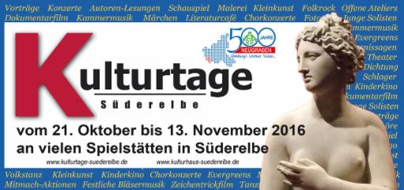

Seit sieben Jahren führt unser Kulturhaus Süderelbe als Koordinator und Organisator die vielen kulturellen Einzelveranstaltungen im Süerelberaum im Rahmen der Kulturtage zu einem beeindruckenden Ganzen zusammen.
Die "Kulturtage Süderelbe 2017“ finden
von Fr, den 3. Nov. bis So, den 19. Nov. 17
statt, diesmal eine Dauer von rund zwei Wochen.
Mit den Kulturtagen möchten wir zusammen mit Ihnen einen Querschnitt des vielfältigen kulturellen Lebens in unserer Region zeigen und ein Programm gestalten, das in diesem Zeitraum Kultur in Süderelbe widerspiegelt und viele Besucher anzieht. Ihren Programmbeitrag, sowohl als erfahrener lokaler Kulturveranstalter als auch als Amateur, nehmen wir gerne im Kulturtage- Programmflyer, der dann von uns intensiv beworben wird, auf.
Meldungen zu Beiträgen sind bereits jetzt, unter info@kulturhaus-suederelbe.de sehr willkommen!
Unterstützen Sie uns und machen Sie mit! Ob Lesung, Konzert, Ausstellung, Performance, Theaterstück oder Tanzveranstaltung - bringen Sie Ihre Veranstaltung auf die „Bühne“ der Kulturtage!
Das Kulturtage-Programm 2016 finden Sie hier zur Ansicht
„Kulturtage Süderelbe 2016“ zeigten wieder, wie vielfältig das kulturelle Angebot in unserer Region ist! Allen Mitwirkenden sagen wir ein riesiges Dankeschön!
